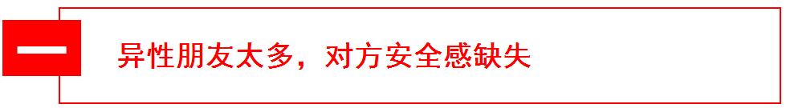
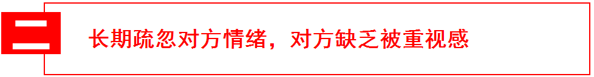
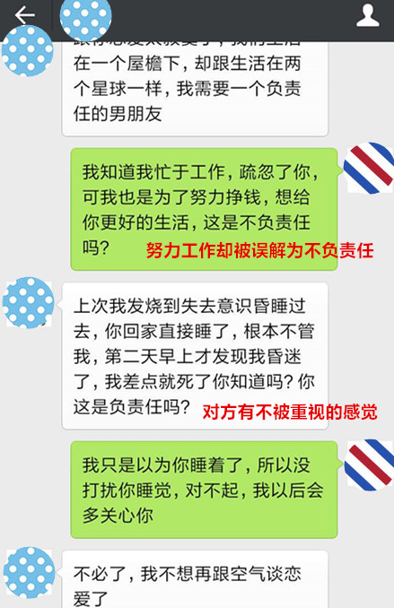
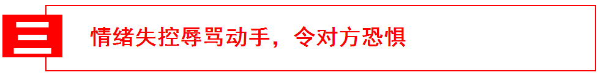

- 返回顶部
- 4006-299-520
- 在线咨询
- 微信公众号

有一部分男性学员非常苦恼，你对她真的很好很好，可她还是要跟你分手，并且一直骂你“渣男”。如果你真是个渣男也就罢了，可你明明行得正做得直，自认为问心无愧，那么“渣男”这个称呼是怎么落到你头上的？
今天我们来分析一下你被误会为渣男的原因，从而甩掉“渣男”的锅，挽回你的爱情。
如果你的异性朋友有很多，你又不是十分注意避嫌，那你被你女朋友误会成“渣男”真的不冤枉。要知道渣男的女人缘通常都很好，身边异性环绕，个个都是发展对象。这么说你可能会很委屈，你跟她们都是坦坦荡荡的关系，你从来没有做对不起她的事情。问题是只靠说的，她会信吗？
你要知道，再大大咧咧的女人，在面对爱情的时候也都是敏感而多疑的。你的异性朋友太多，又不注意避嫌，会让你的女朋友很没有安全感。在她质问你的时候，你再不去好好跟她沟通，而是一味地指责她不信任你，那你们离分手真的不远了，你也就这样背上了“渣男”的锅。
你和渣男的区别是什么？渣男是把周围的女性朋友都当做备胎，而你对女朋友忠诚，跟她们绝无暧昧。你要把这种绝无暧昧的态度表现给你女朋友，你和她们之间清楚坦白，没什么不能被你她知道的。
在与其他女性朋友往来中，坦白让你女朋友知道，不要遮掩，越是遮掩她越是怀疑。在需要与其他女性朋友单独相处的时候，要提前跟你女朋友打招呼，做到避嫌，相信我，主动跟她说明，和日后被她发现，是截然不同的结果，即使你没做什么不该做的事情。
渣男为了保持自己对其他女性的吸引力，通常会隐瞒自己有女朋友的事实，造成自己仍然单身的假象。你又不是渣男，为什么不敢公开你的恋爱，不能公开的恋爱就是造成她缺失安全感的原因。
你们的恋爱是堂堂正正的，没有什么不能被别人知道的。你的朋友圈里偶尔要发她的照片，告诉你的朋友们，你恋爱了，不是单身。你的这种开诚布公的态度，会让她在看到你的女性朋友的时候有种心理上的主权优势，会增加她的安全感，减少她的猜忌。
为了给她更好的未来生活，为了给你们的婚姻一个充裕的经济准备，你用尽全力去工作，去拼搏，十分辛苦。你很少有时间去看看球赛，打打游戏，做做自己喜欢的事情。加了一晚上班，累到回家后沾床就睡，没有力气去做任何事情。她因为你对她的疏忽跟你吵架，你却觉得她不体谅你的付出与辛苦。
这是学员赵军（化名）和他女朋友的分手对话，为未来努力拼搏的赵军在她心里变成了不负责任的“渣男”。这要怪她不够体谅吗？从说话方式可以看出她是个很理智的人了，没有歇斯底里，也没有无理取闹。只能说再善解人意的女人也会因为这种长期疏忽而无法忍受，最终分手。
女人像猫一样，需要你去照顾她，宠爱她，关心她。她情绪敏感，心思百变，无法忍受你的长久疏忽。作为男性一方，在恋爱过程中，不是只给对方物质上的关心就可以的，她更多的是需要你在感情上的关心。
照顾她的情绪不代表你要推掉你的工作和爱好，只要你表现出她比工作、比游戏、比看球赛更重要就可以了。她需要的是被你重视的感觉，她会因为这种感觉而感到满意和安慰，而不是需要你只围着她转。你的重视会让对方认为你是个负责任的人，自然就不会认为你是个“渣男”。
两个人的生活和一个人是不一样的，既然你交了女朋友，你就有责任去维护你们之间的关系。她是一个有思想有情绪的人，会因为你的疏忽而难过，也会因为你的重视而开心，恋爱长久的根本就在于能维护好两性长期关系。
在相处的过程中，你要增加双方的互动。一起去散步、旅行、爬山、购物等等，如果你确实没时间，吃完饭一起洗碗，跟她聊聊天总可以吧？你要让她有确实在跟你恋爱的感觉，而不是天天面对空气。
当你们因为矛盾发生争吵的时候，盛怒之下，你口不择言，脏话骂人。更有甚者，一时热血冲头，情绪激动，直接动手打了对方。你被定义成“渣男”不冤枉吧？你可能会狡辩，我只是一时激动，情绪失控，我不想打她，那不是我的本意，我也很后悔，我平时对她那么好，我怎么就是渣男了？
我明白你只是一时冲动，但你要知道，没有人管你是不是一时冲动，大家看到的是你打女人了。按照正常的逻辑，能打一次就能打一辈子，你这次管不住自己，下次就能管住吗？解释并没有用，要摆脱“渣男”的称呼，只能从控制你的情绪入手了。
情绪并非不可控的，所谓的控制不住只是你不愿意去努力的借口，一个控制不住自己情绪的人， 不管在工作上还是生活上，都不会太成功。用理性去驾驭情绪，才能够摆脱“渣男”称呼，挽回你的爱情。
当你感觉情绪要失控的时候，不要去开口说话，更不要动手，保持镇定，从潜意识里明白自己情绪要失控了，告诉自己要保持理智，用理智去剥离这种失控的情绪，将其转化为平和的状态。
情绪不稳定的人，就像是定时炸弹，随时都有爆炸的可能。你已经爆炸过不止一次了，她在潜意识里就对你有一种恐惧的心理，这种恐惧心理不断的提醒她你以前的所作所为，对你的挽回形成阻碍。
在挽回的过程中，恰当的展现出你对控制情绪做出的努力，告诉她你已经沉淀下来，不再那么冲动，更不会动手，让她不再担惊受怕，打消对你的恐惧心理。